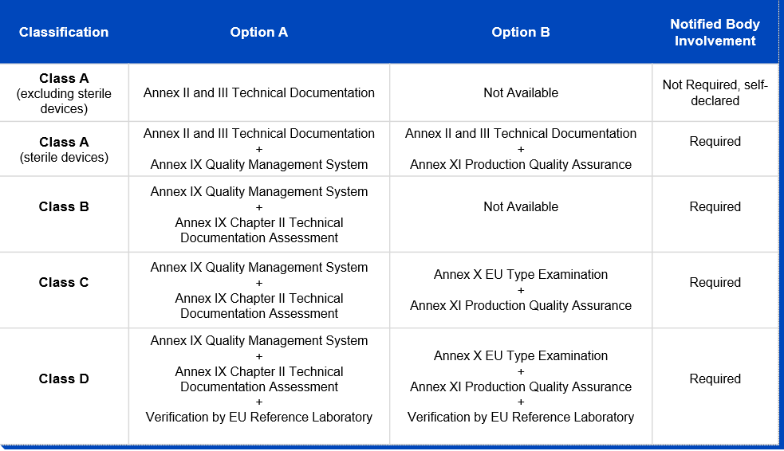

Research assistant Nicole Gebert contributed to this article.
In vitro diagnostic medical devices (IVDs), hence devices used for medical tests on samples such as blood or tissue that have been taken from the human body, have become the center of attention in the public eye during the COVID-19 pandemic. But also apart from the pandemic, the industry is seeing significant growth with the software component of such devices becoming increasingly important with regard to in vitro testing.
Similar to other medical devices, the regulatory framework for IVDs in Europe is undergoing significant changes. About a year ago, the EU Medical Device Regulation (EU) 2017/745 (MDR) entered into force and brought about significant challenges for medical device manufacturers with respect to obtaining medical device certification and post-market surveillance compliance (for more information on the MDR find our previous blog series here). Now the new EU In Vitro Diagnostic Regulation (EU) 2017/746 (IVDR) entered into full force and effect on May 26, 2022. Whereas certain legacy devices will benefit from transition periods, all new IVDs and certain low-risk IVDs already on the market are now subject to the IVDR requirements.
Key changes that the IVDR brings about for stakeholders in the industry are the following:
- Broader definition of IVDs;
- New risk-based classification system;
- New conformity assessment procedures;
- New requirements for clinical evidence, performance evaluation, and performance studies;
- Post-market surveillance;
- Introduction of a unique device identifier; and
- Transition periods.
This article is split into three parts. In this first part, we will discuss the general purpose and background of the IVDR, the new definition of IVDs, and the conformity assessment in light of the new risk classification as well as the role of notified bodies.
In part 2 of this article (to be published on June 6, 2022), we will discuss clinical evidence, post-market surveillance (including unique device identifiers (UDIs)), and transition periods.
In part 3 of this article (to be published on June 13, 2022), we will cast light specifically on software as an IVD and the delineation between the MDR and the IVDR.
Background and Purpose of the IVDR
In the European Union, before an IVD can be marketed, manufacturers must obtain a CE mark to certify that the device complies with applicable law. The former regulatory regime was based on the European Directive on In Vitro Diagnostic Medical Devices (IVDD 98/79/EC (IVDD)).
The IVDR initially came into force on May 25, 2017, but contained a transition period that (after an extension during the COVID-19 pandemic) ended on May 26, 2022, and completely replaces the IVDD regime. As an EU Regulation, the IVDR does not need to be implemented into national legislation and will be applicable to all members of the EU and EFTA countries immediately.
The regulation is designed to create a framework that sets out to improve clinical safety and establish fair market access for IVD manufacturers. The IVDR aims to bring EU legislation in line with technological advances, changes in medical science, and progress in law. Very similar to the MDR, the IVDR focuses on traceability throughout the supply chain, including the use of UDI systems and new clinical evidence standards. More stringent post-market surveillance is required, bringing the regulation of IVDs more closely in line with the requirements for medicines and other medical devices in the EU. It also sets new standards for the application of a CE mark on IVDs to ensure a higher level of quality, safety, and reliability.
New Definition of IVD
The definition of an IVD has been expanded and clarified to include tests intended to predict medical conditions or diseases, as well as companion diagnostics and software. Similar to the definition of a medical device under the MDR, the definition of an IVD is determined by the intended use of the device (more information on the MDR definition is available here). In accordance with MDR Article 2(2), the IVDR covers any IVD intended by the manufacturer to be used in vitro for the examination of specimens, including blood and tissue donations, derived from the human body for the purpose of providing information on one or more of the following:
- A physiological or pathological process or state;
- Congenital physical or mental impairments;
- A predisposition to a medical condition or a disease;
- Safety and compatibility for potential recipients;
- Predictions for treatment response or reactions; or
- Definition or the monitoring of therapeutic measures.
Furthermore, specimen receptacles are also deemed to be IVDs.
Notably, the broadened IVDR definition explicitly includes software. While this is a reaction to the increasing use of software in the field (compared to the situation under the IVDD when it was established in 1998), it is also consistent with the general developments in EU legislation, which are also reflected in the definition of medical devices under the MDR, which explicitly includes software as well (for more information see part 2 of our MDR blog series). When software meets the above-mentioned criteria and serves a medical purpose, it qualifies as an IVD and must comply with the requirements of the IVDR. Examples of IVD software include
(i) systems that support the process from patient sample to patient results, such as laboratory information systems and work area managers, (ii) expert systems that are intended to provide information by capturing and analyzing results obtained through in vitro examinations, and (iii) image management systems that incorporate functions to support post-processing of images for diagnostic purposes. A particular spotlight on these devices will be cast in part 3 of this article (to be published on June 13, 2022).
New Risk-Based Classification System
The IVDR adopts a new classification system that categorizes products into four classes according to their risk characteristics. Taking into account both patient and public health risks, these range from low to high:
- Class A - Low individual risk and low public health risk;
- Class B - Moderate individual risk and/or low public health risk;
- Class C - High individual risk and/or moderate public health risk; and
- Class D - High individual risk and high public health risk.
Annex VIII of the IVDR includes seven classification rules as well as a set of implementing rules, which are intended to aid IVD manufacturers in classifying products according to their risk levels. Additionally, the Medical Device Coordination Group (MDCG), issued its Guidance on Classification Rules for in vitro Diagnostic Medical Devices under Regulation (EU) 2017/746 in January 2022, which is a helpful tool for IVD manufacturers to use to self-assess the classification of their products.
Under the IVDR, if IVD software is independent of any other device, it shall be classified in its own right (IVDR; Annex VIII 1.4). In contrast to the classification rules under the MDR which provide a specific rule governing the classification of standalone software as a medical device, the classification of software under the IVDR requires consideration of all classification and implementation rules of Annex VIII. Further guidance on the classification of software under the IVDR is provided by the MDCG 2019-11 Guidance on Qualification and Classification of Software in Regulation (EU) 2017/745 – MDR and Regulation (EU) 2017/746 – IVDR, which also contains valuable guidance on the delimitation of software as a medical device versus software as an IVD.
New Conformity Assessment
While the majority of IVDs were permitted to be self-certified by manufacturers under the IVDD, thereby evading the need for a notified body review in order to obtain their CE markings, this will be reversed under the IVDR. Due to the new classification system, the majority of IVDs will undergo a conformity assessment by a notified body, instead of self-certification by manufacturers, before they are deemed to be certified. As can be inferred from the graphic below, only conformity assessment procedures for non-sterile class A devices remain the responsibility of the manufacturer and don’t require the involvement of a notified body. The German notified body TÜV Süd estimates that 90 percent of all IVDs will have to be tested by a notified body under the IVDR, compared to less than 15 percent under the IVDD. In order for manufacturers to obtain the declaration of conformity and, where necessary, the CE mark certificate, the IVDR stipulates a conformity assessment route for each risk class:

Notified Bodies
As can be inferred from the above, notified bodies play a critical role in supporting manufacturers in their efforts to place only safe and compliant IVDs on the EU market. The IVDR requires notified bodies to be designated. Notified bodies will have to meet more stringent criteria than under the IVDD, particularly in terms of technical and scientific evaluation proficiency. After a notified body applies for designation, the process can take up to 12 months or more, with both national and European authorities involved in the assessment.
The EU Commission maintains a list of all IVDR-certified notified bodies on its New Approach Notified and Designated Organizations (NANDO) website. Including the latest designation of a notified body in Slovakia in May 2022, there are only seven notified bodies designated under the IVDR, located in only four countries (Slovakia, France, Germany, and the Netherlands). In October 2021, the EU Commission already addressed this issue as “a grave shortage of notified body capacity” also saying it will be difficult “for manufacturers to conduct the legally required conformity assessment procedures in time.” Consequently, this led to the Commission’s proposal to extend the roll-out periods and introduce new transition periods.
CONCLUDING REMARKS
The IVDR will make a required careful assessment of the intended purpose of IVDs and IVD software inevitable, which must cover every part of their documentation and advertisement. As most IVDs will be reclassified in class B and higher, and therefore require notified body review, the importance of notified bodies within the EU regulatory regime for IVDs will increase significantly. At the same time, only a handful of notified bodies are currently accredited to review and certify IVDs, which creates a bottle neck for IVD manufacturers’ market access. Stakeholders will thus need to plan well in advance of a launch of new IVD products, and it can be expected that many manufacturers will need to rely on transition periods for legacy devices, which will be discussed in detail in part 2 of this series of consecutive articles.